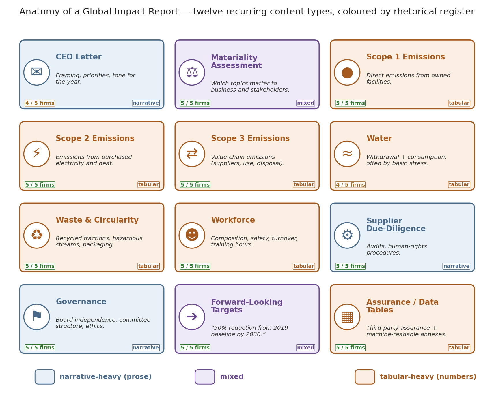

SUE Walk-Through
What is a Global Impact Report?
A Global Impact Report (sometimes an ESG or Sustainability Report) documents a corporation’s environmental, social, and governance performance — emissions, water, workforce, safety, board oversight, and supply-chain ethics.
Firms publish them for regulators, capital markets, and the growing pool of investors who want their portfolios guided by corporate responsibility as well as by returns.
This demo of the Semantic Universe Explorer (SUE) compares the Global Impact Reports of five direct competitors in semiconductor-manufacturing equipment: Applied Materials, ASML, KLA, Lam Research, and Tokyo Electron.
Every dot in the interactive viewer represents one passage — approximately 900 characters — from one report. Passages are positioned by semantic similarity rather than by authorship.
A Global Impact Report is assembled from roughly a dozen recurring content types. Some are narrative (a CEO letter, a governance chapter, a description of supplier audits); others are predominantly tabular (Scope 1 / 2 / 3 emissions, water withdrawal by basin, workforce demographics). The diagram below labels those blocks and colours them by rhetorical register — blue for narrative-heavy, orange for tabular-heavy, purple for mixed. Empirically, the viewer’s Prose→Tabular axis coincides with the same partition.

What each color mode means
- Company
- Each chunk is coloured by its authoring firm. Provides a visual check for whether any single firm occupies a distinct region of the embedding space.
- Prose→Tabular score (low = prose, high = tabular)
- A scalar per chunk ranging from strongly narrative (blue) through mixed (zero) to strongly tabular (red). Formally, the projection of the chunk’s embedding onto the axis joining the centroid of narrative-labelled chunks to the centroid of tabular-labelled chunks.
- Digit Density of Text
- A non-learned control variable: the fraction of a chunk’s characters that are numerals. Agreement between digit density and the Prose→Tabular score suggests the observed separation may reflect surface numeric content rather than learned semantics.
- Cross-corpus outlierness (rank)
- For each chunk, the mean distance to the centroids of the four other firms’ embeddings. Higher values indicate passages atypical of the competitor set.
- In-doc typicality
- For each chunk, the distance from the centroid of its own document. Useful for identifying passages that depart from the rest of the same report.
- Unsupervised cluster (GMM)
- A two-component Gaussian mixture fitted on the top-20 principal components without access to any prose/tabular label. Recovery of the same partition constitutes independent evidence that the split is intrinsic to the corpus.
Further Statistical Analyses
The interactive viewer is one entry point to a corpus that also admits standard statistical treatment. Several complementary methods — each summarised on the Math & statistics page with all variables defined — indicate that the corpus is bimodal along a prose–tabular axis, and that this partition is preserved under multiple dimensionality reductions. Click a thumbnail to jump to the corresponding section.


Open the Math & Statistics page →
The five companies and their reports
Each chunk in the viewer corresponds to approximately 900 characters of one firm’s Global Impact Report. Links to the source documents are given below.
| Company | 2025 | 2024 | 2023 | 2022 |
|---|---|---|---|---|
| Applied Materials | Impact Report | Impact Report | Sustainability Highlights1 | Sustainability Report |
| ASML | Annual Report | Annual Report | Annual Report | Annual Report |
| KLA | —2 | Global Impact Report | Global Impact Report | Global Impact Report (archived copy)3 |
| Lam Research | Global Impact Report | Global Impact Report | ESG Report | ESG Report |
| Tokyo Electron | Integrated Report | Integrated Report | Integrated Report | Sustainability Report4 |
- 1 Shorter 'Sustainability Highlights' brochure rather than a full report.
- 2 No 2025 report published yet at time of writing.
- 3 The 2022 KLA report was pulled from KLA's own site; linked here via the third-party archive at responsibilityreports.com.
- 4 TEL's 2022 sustainability content was published as a web page rather than a single downloadable PDF.